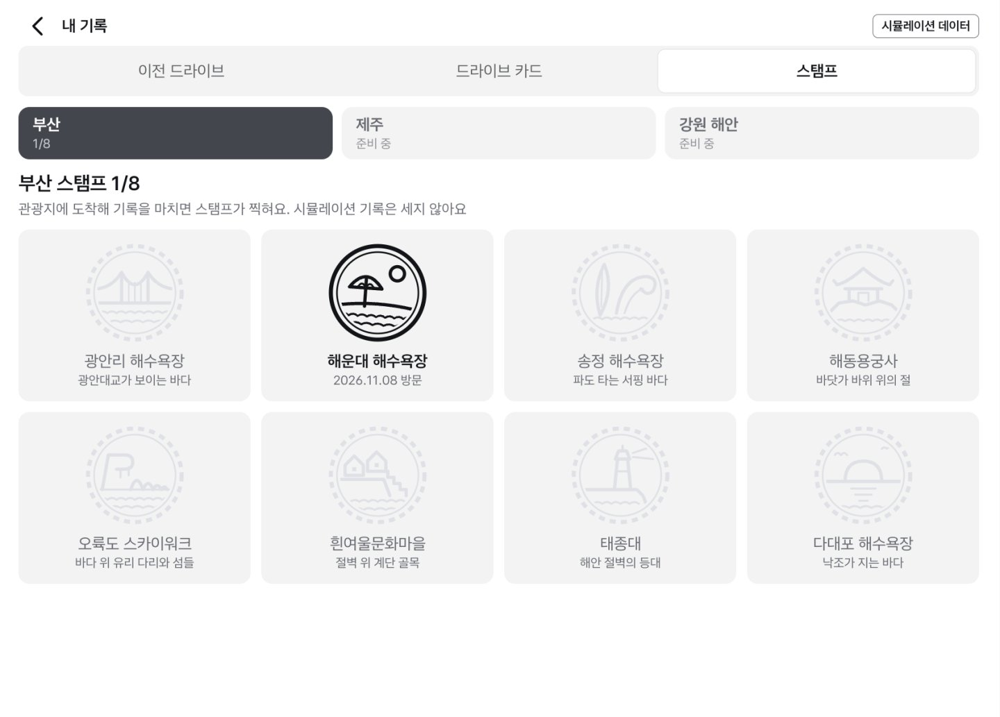
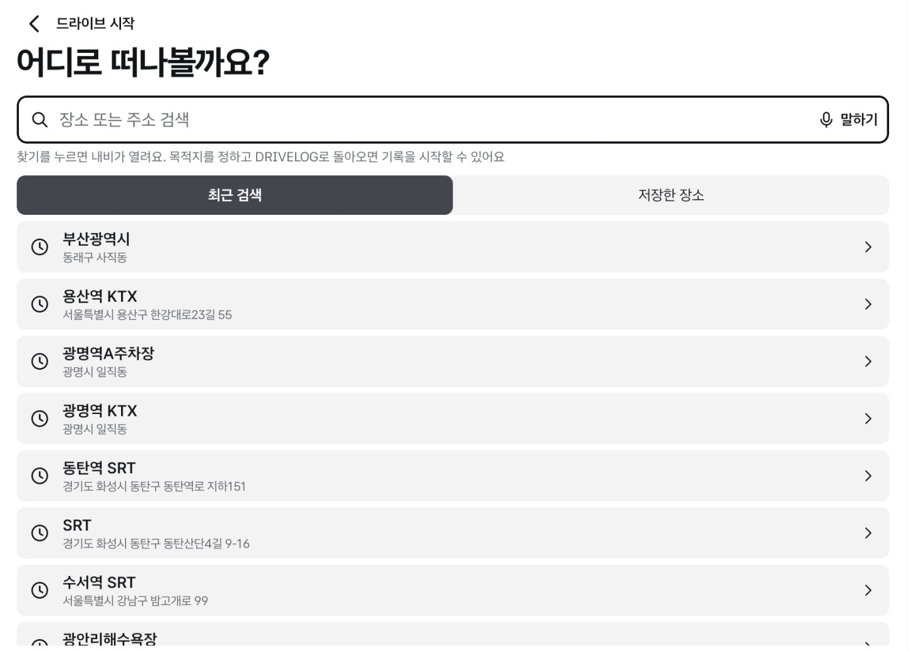
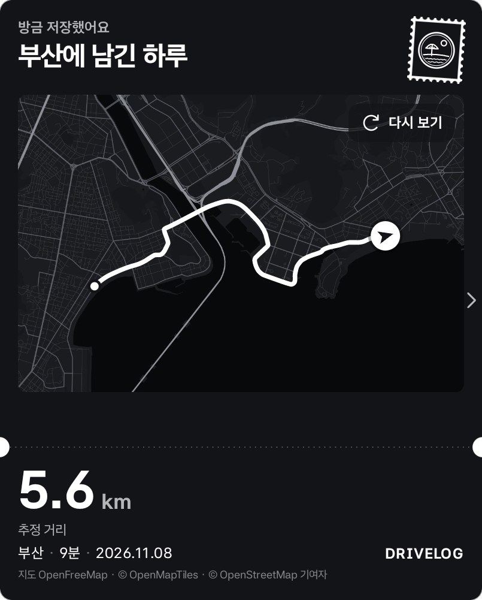
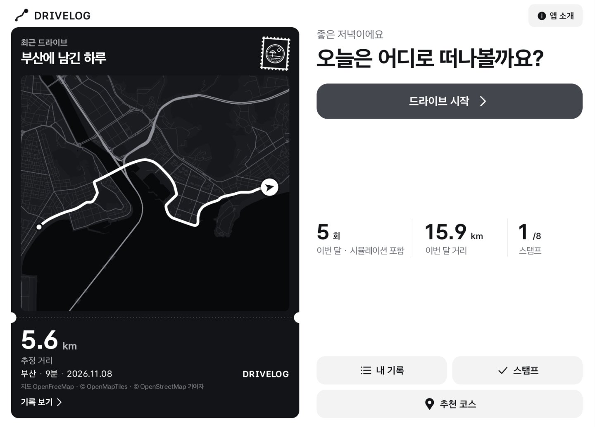

관광지 스탬프
기록의 끝 지점이 관광지에서 1km 안이면 그곳의 스탬프가 찍혀요. 속도나 연속 방문 같은 조건은 없어요.

드라이브를 마치면 운전한 사람에게는 남는 것이 없어요. 내비 기록은 연비와 점수이고, 운전 중에는 휴대폰을 켤 수 없으니까요.

말하거나 입력하면 Pleos 내비가 장소를 찾아요. 최근 검색과 저장한 장소에서 바로 고를 수도 있어요.
주행 중 화면에는 장소, 분 단위 시간, 거리만 보여요. 길 안내는 기본 내비가 맡고, 기록은 뒤에서 이어져요.
P에 두면 기록을 마칠지 물어요. 저장하면 지도 위에 흰 선으로 경로를 그린 카드가 만들어져요.
카드는 제목, 경로, 거리, 장소와 날짜 순서로 읽혀요. 카드를 옆으로 밀면 같은 카드 안에서 구간 기록과 전비가 펼쳐져요.


기록의 끝 지점이 관광지에서 1km 안이면 그곳의 스탬프가 찍혀요. 속도나 연속 방문 같은 조건은 없어요.

움직이는 동안 바뀌는 것은 분 단위 시간과 거리뿐이에요. 애니메이션은 정차했을 때만 움직여요.
출발과 도착의 배터리 잔량 차이로 계산해요. 잔량을 너무 거칠게 주는 차에서는 틀린 값을 보이지 않도록 숨겨요.
화면에 QR을 띄우면 카드가 그 휴대폰으로만 넘어가요. 휴대폰에서 사진을 깔고 같은 경로선을 올릴 수 있어요.
카드의 선은 차 안에서 기록한 좌표로 기기에서 직접 그려요.
주소의 # 뒤에 담겨 브라우저가 서버로 보내지 않아요. 출발 쪽 500m는 잘라서 담아요.
지도 조각을 받을 때 주행 지역이 지도 서비스에 전달되며, 앱 안에서 이를 밝혀요.
코스를 추천할 때는 경로 앞뒤 500m를 자르고, 출발지는 동네 이름으로만 보여요.